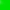

The little green blob right there is a tiny, super-simple artificial intelligence. Examine the page source and "blob.js" for his Q learning algorithm. He moves around however he wants. If he touches the green square, he is rewarded with 50 points. If he touches the red square, he is punished with -50 points. Otherwise, he doesn't initially know the layout of the environment, and he doesn't do any planning beforehand. He stumbles around, learning as he goes, until he figures out that green is good and races toward it all the time (you'll have to let it run for a little while, or adjust the speed).
Set Speed (caps at 3000)
Click here to choose a block, and then click somewhere on the stage to set it.
# of green blocks touched: 0
# of red blocks touched: 0
This is about as simple a reinforcement q learning algorithm you can get. The agent (green blob) stores his position (his "state"), and a set of actions that he can take for that given position. When he makes an action, he stores a result into a "Q" matrix, which is a map of state, action pairs to "Q" values.
Let's think about a concrete example. Green blob is at the top right, right next to that red block. He can either go up, down, left, or right. If he decides to move into the red block, his Q value for that state, action pair (e.g. top right, move into the red block) is updated with a -50 punishment. He won't be so quick to move there next time.
So given a state and a list of actions, our green blob has a bunch of Q values. He likes to pick the action that maximizes the Q value of a particular pair. However, he also likes to explore the environment, in case he finds something cool (maybe a +100 reward? Too bad they don't exist.) That's why you'll see him not immediately go for the green every time - he's looking around. This way he can keep a fairly up-to-date model of the world. Note that if you place a green block right next to his starting position, he will probably immediately go there every time. This is because he has no real need to explore - that green block next to him appears to be the best option every time.
The agent has a few parameters for its brain model, \(\alpha, \gamma, \epsilon\). In basic terms, \(\alpha\) controls the amount which the rewards affect the Q value updates (how sensitive the agent is to rewards and punishments), \(\gamma\) controls how sensitive the agent is to the rewards/punishments from future actions from the chosen state (the agent knows that if he steps 1 block to the right, he only needs 1 more step up to get the reward), and \(\epsilon\) controls how often the agent chooses to explore rather than maximize the reward of the world he already knows.
Thus, the update equation goes like this:
$$ \begin{align*} \text{Let } I &= \text{Reward(current state)}\\ \text{Let } M &= \text{max(reward of next possible actions)}\\ \text{Q value for (current state, action)} &= \alpha * (I + \gamma*M - \text{Q value for (current state, action)}) \end{align*} $$All Q values are initialized at 0.
The green blob is cutesy and all, but why does anyone care? It turns out that this kind of learning can be applied to lots of different situations where "trying a lot" is not considered bad. For example, you could have an reinforcement learner who plays tic-tac-toe, and is punished when it loses and rewarded when it wins. Over many games, it will learn how to play tic tac toe pretty well.
Also, if you find this interesting, check out "Deep Q Learning", which essentially combines a neural network with a reinforcement learning agent, so that the agent can navigate continuous spaces (where there aren't finite actions/states). The neural net serves to locate patterns and estimate cost functions and Q values. It's really neat stuff.
Feel free to contact me with any questions/comments you have.